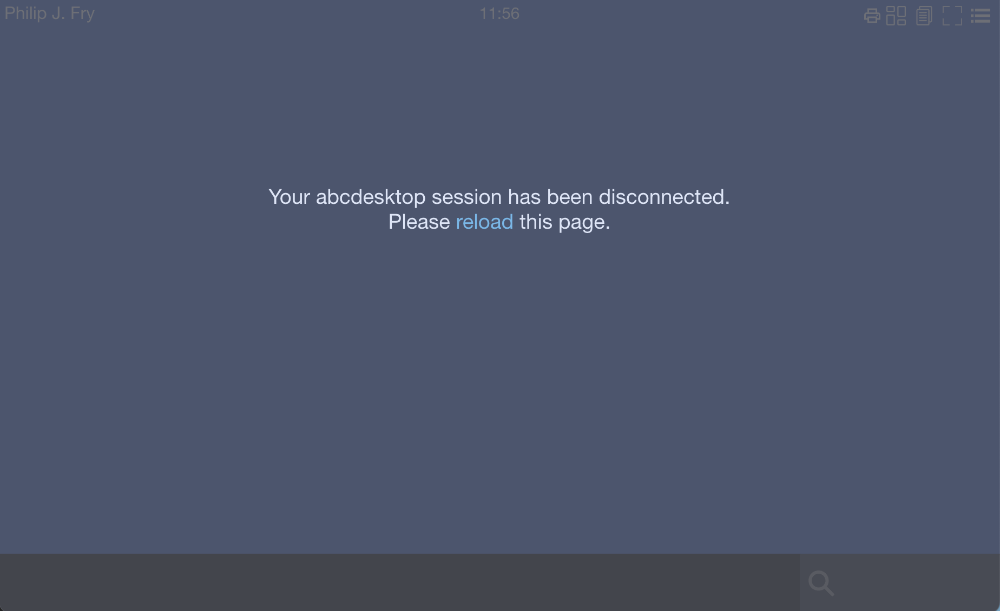

FAQ
List of questions and answers relating to abcdesktop.io
A Kubernetes Cloud provider can be Amazon EKS, DigitalOcean DOKS, Azur AKS, Google GKE, or any of others cloud provider with a Kubernetes service.
Networking
This list of questions and answers is relating network, talking about
- port-forward
- NodePort
- LoadBalancer
- Ingress Controler
- WebSocket timeout
How can I reach my new service on a Kubernetes cloud provider ?
I was attempting to deploy the ABCDesktop (kubernetes-version-3.0) for testing my setup with a few of my own desktop applications. Everything worked fine when tested locally in my Ubuntu (22.04) machine. I then thought to deploy the setup in a Kubernetes cloud provider with 3 nodes cluster. How can I reach my new hosted service on a Kubernetes cloud provider (Amazon EKS, Digital Ocean, Azur AKS, Google GKE) ?
We use the kubectl port-forward to the nginx pod
NGINX_POD_NAME=$(kubectl get pods -l run=nginx-od -o jsonpath={.items..metadata.name} -n abcdesktop)
kubectl port-forward $NGINX_POD_NAME --address 0.0.0.0 80:80 -n abcdesktop
Then open your web browser to reach the http://localhost
Then open your web browser, you get the home page, login using LDAP auth or Anonymous auth.

Then login, and you get a pod user.
For the first time, you may get a timeout error, if container images can't be downloaded in less than 180 seconds on the worker node.

How can I expose my new service with an external IP address ?
I was attempting to deploy the abcesktop (kubernetes-version-3.0) for testing my setup with a few of my own desktop applications. Everything worked fine when tested locally in my Ubuntu (22.04) machine. I then thought to deploy the setup in a Kubernetes cloud provider with 3 nodes cluster. How can I expose my new service with an external IP address ?
To expose the service with an external IP address, we need to update the nginx service type. The default type on your own desktop is type: NodePort, the nginx service type on a Kubernetes cloud provider becomes type: LoadBalancer.
Delete the previous abcdesktop's nginx service
kubectl delete service nginx -n abcdesktop
Create a new nginx service yaml file named nginx-lb.yaml
The new nginx service type is LoadBalancer
kind: Service
apiVersion: v1
metadata:
name: nginx
namespace: abcdesktop
spec:
type: LoadBalancer
selector:
run: nginx-od
ports:
- protocol: TCP
port: 80
targetPort: 80
name: http
Apply the nginx service type LoadBalancer
kubectl apply -f nginx-lb.yaml
service/nginx created
Wait for an EXTERNAL-IP from you kubernetes cloud provider
kubectl get service nginx -n abcdesktop
NAME TYPE CLUSTER-IP EXTERNAL-IP PORT(S) AGE
nginx LoadBalancer 10.245.105.75 <pending> 80:31581/TCP 64s
You get the EXTERNAL-IP for your LoadBalancer
kubectl get service nginx -n abcdesktop
NAME TYPE CLUSTER-IP EXTERNAL-IP PORT(S) AGE
nginx LoadBalancer 10.245.172.53 161.35.246.4 80:30443/TCP 2m36s
In case, the LoadBalancer service returns the EXTERNAL-IP 161.35.246.4
Then open your web browser to reach this EXTERNAL-IP 161.35.246.4.

Login using Philip J. Fry

And you should get the fry desktop

How can I expose my new service with Ingress Controller ?
A Kubernetes Ingress Controller acts as a reverse proxy.
In the Ingress, define a path to the abcdesktop's nginx service.
apiVersion: networking.k8s.io/v1
kind: Ingress
metadata:
name: ingress-demo
namespace: abcdesktop
spec:
rules:
- host: demo.digital.pepins.net
http:
paths:
- path: /
pathType: Prefix
backend:
service:
name: nginx
port:
number: 80
ingressClassName: nginx
The request path: / is proxyfied to service named nginx in abcdesktop namespace.
How to prevent the connection from closing after 60 seconds of inactivity ?
My desktop is disconnected after 60 seconds of inactivity, and the message "Your abcdesktop session has been disconnected. Please reload this page" appears.

The message Your abcdesktop session has been disconnected. Please reload this page appears when the websockify websocket is disconnected.
Add an heartbeat value to send a ping to the client every INTERVAL seconds
Edit the od.config file, add to the desktop.envlocal option 'WEBSOCKIFY_HEARTBEAT':'30'
desktop.envlocal: { 'WEBSOCKIFY_HEARTBEAT':'30', 'LIBOVERLAY_SCROLLBAR':'0', 'UBUNTU_MENUPROXY':'0', 'X11LISTEN':'tcp' }
In this case, the command /usr/bin/websockify sends a ping to the client every 30 seconds. This command runs in the user's pod.
Update the configmap abcdesktop-config
kubectl create -n abcdesktop configmap abcdesktop-config --from-file=od.config -o yaml --dry-run=client | kubectl replace -n abcdesktop -f -
Restart the pyos pod
kubectl delete pods -l run=pyos-od -n abcdesktop
To get more informations how to Keepalive in websockets
Timeout is a main feature to preserve from unnecessary network bandwidth.
How to prevent the connection from closing after 60 seconds of inactivity with an Ingress Controller ?
My desktop is disconnected after 60 seconds of inactivity, and the message Your abcdesktop session has been disconnected. Please reload this page appears.
To prevent the connection from closing after 60 seconds of inactivity through Ingress Controller, make sure the Ingress Controller isn't configured to automatically terminate long connections. The default value nginx's ingress controller is 60 seconds.
Update the default values for nginx.ingress.kubernetes.io/proxy-read-timeout and nginx.ingress.kubernetes.io/proxy-send-timeout annotations to more than 60 seconds.
apiVersion: networking.k8s.io/v1
kind: Ingress
metadata:
name: ingress-demo
namespace: abcdesktop
annotations:
nginx.ingress.kubernetes.io/proxy-read-timeout: "3600"
nginx.ingress.kubernetes.io/proxy-send-timeout: "3600"
spec:
rules:
- host: demo.digital.pepins.net
http:
paths:
- path: /
pathType: Prefix
backend:
service:
name: nginx
port:
number: 80
ingressClassName: nginx
Applications
This list of questions and answers is relating abcdesktop's applications, talking about
/API/manager/imagesendpoints
How to delete all applications ?
To delete all applications use the images endpoint, replace localhost:30443 by your own datas
curl -X DELETE -H 'Content-Type: text/javascript' http://localhost:30443/API/manager/images/
It returns a json list of all deleted applications
["abcdesktopio/2048-alpine.d:3.0", "abcdesktopio/2048-ubuntu.d:3.0", "abcdesktopio/apachedirectorystudio.d:3.0", "abcdesktopio/astromenace.d:3.0", "abcdesktopio/base.d:3.0", "abcdesktopio/beekeeperstudio.d:3.0", "abcdesktopio/blender.d:3.0", "abcdesktopio/bless.d:3.0", "abcdesktopio/blobby.d:3.0", "abcdesktopio/boxes.d:3.0", "abcdesktopio/calculator.d:3.0", "abcdesktopio/chess.d:3.0", "abcdesktopio/chimerax.d:dev", "abcdesktopio/chrome.d:3.0", "abcdesktopio/chromium.d:3.0", "abcdesktopio/citrix.d:3.0", "abcdesktopio/cloudfoundry.d:3.0", "abcdesktopio/cmd.exe.d:3.0", "abcdesktopio/corsix-th.d:3.0", "abcdesktopio/cuda.d:dev"]
How to add an application ?
To add an application : - get the json file of an application - push the json file to the abcdesktop's images endpoint
wget https://raw.githubusercontent.com/abcdesktopio/oc.apps/main/2048-alpine.d.3.0.json
curl -X POST -H 'Content-Type: text/javascript' http://localhost:30443/API/manager/image -d @2048-alpine.d.3.0.json
The first start will pull the 2048 image, so it can take a while.
How to get the json file of a containerized application ?
To get the json file of a containerized application, you can use docker command or crictl command
dockercommand
docker inspect abcdesktopio/2048-alpine.d:3.0 > 2048-alpine.json
crictlcommand
crictl inspecti abcdesktopio/2048-alpine.d:3.0 > 2048-alpine.json
My application doesn't start. How to get log files ?
Open the webshell and read the logs files.
The log files are /tmp/lastcmd.log, /tmp/lastcmdenv.log and /tmp/NAME OF THE APPLICATION.log.
/tmp/lastcmd.logthe init command log file created by /composer/appli-docker-entrypoint.sh/tmp/lastcmdenv.logthe last environment variables file/tmp/NAME OF THE APPLICATION.logthe command log file for the application